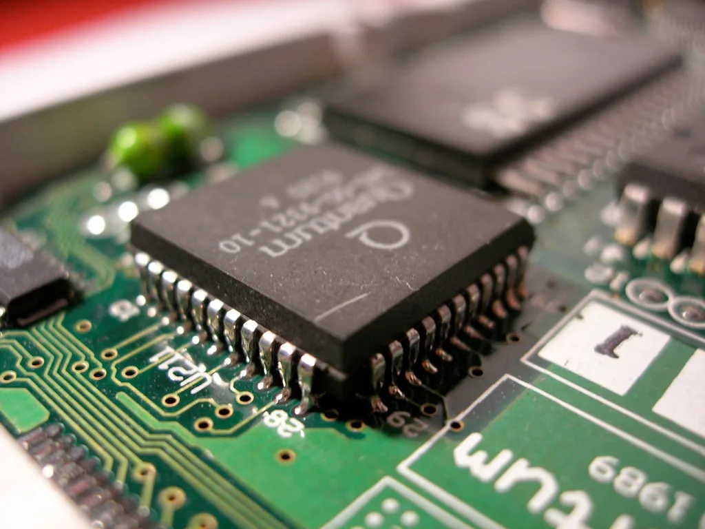
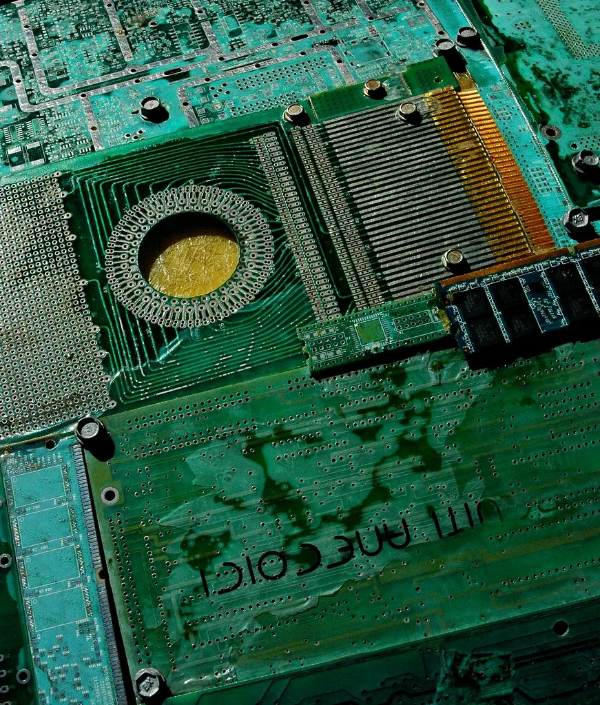

서버 D램 리드타임 52주로 급증…"증설해도 부족" 공급난 장기화
서버용 고용량 D램의 주문부터 실제 납품까지 걸리는 기간, 이른바 리드타임이 최대 52주까지 늘어난 것으로 나타났다. 이는 통상적인 리드타임인 6주 안팎과 비교하면 8배 넘게 길어진 수치로, 인공지능(AI) 서버 수요 급증에 따른 메모리 공급난이 얼마나 심각한 수준인지를 단적으로 보여준다는 평가가 나온다. 업계에서는 이런 리드타임 장기화가 일시적 병목이 아니라 구조적인 현상으로 굳어지고 있다는 우려가 커지고 있다. 특히 고용량 서버용 모듈일수록 대기 기간이 더 길어지는 경향을 보이면서, 데이터센터 증설 계획을 세운 기업들의 셈법도 복잡해지고 있다.
이런 현상의 배경에는 삼성전자 등 주요 메모리 제조사가 하이퍼스케일러와 맺은 장기공급계약(LTA) 물량을 최우선으로 배정하면서, 현물시장과 일반 고객에게 돌아가는 물량이 크게 줄어든 사정이 있다. 데이터센터를 운영하는 빅테크 기업들이 AI 서버 증설을 위해 장기계약으로 물량을 선점하다 보니, 그 외 수요처는 상대적으로 뒷전으로 밀리는 구조가 고착화하고 있는 셈이다. 중소 서버 업체나 일반 PC 제조사들은 장기계약 체결 여력이 상대적으로 부족해 현물시장 의존도가 높은 편이라, 이번 공급난의 충격을 더 크게 체감하고 있다는 지적도 나온다.

업계에서는 이번 공급난을 두고 '증설의 역설'이라는 표현까지 나온다. 생산능력을 늘려도 부족 현상이 해소되지 않는 것은, 늘어난 생산라인의 상당 부분이 범용 D램이 아니라 고대역폭메모리(HBM) 생산에 집중적으로 투입되고 있기 때문이다. 전체 D램 생산능력에서 HBM이 차지하는 비중은 지난해 27%에서 올해 33%로 높아졌고, 내년에는 40%까지 확대될 것으로 전망된다. 반대로 서버·PC 등에 쓰이는 범용 D램 비중은 73%에서 65%로, 다시 59%까지 낮아질 것으로 업계는 내다보고 있다.
AI 인프라 투자 경쟁이 격화되면서 HBM에 대한 수요가 워낙 가파르게 늘다 보니, 제조사 입장에서도 수익성이 높은 HBM 라인 확대에 우선순위를 둘 수밖에 없는 상황이다. 그 결과 상대적으로 범용 D램 공급 여력이 줄어드는 되먹임 구조가 만들어지고 있다는 게 업계의 설명이다. 이 때문에 서버 제조업체나 클라우드 사업자들도 물량 확보를 위해 장기계약 비중을 늘리는 쪽으로 조달 전략을 바꾸고 있는 것으로 전해졌다.

이런 흐름은 메모리 가격에도 그대로 반영되고 있다. 공급이 빠듯해지면서 D램 가격 상승세가 장기화할 것이라는 전망이 확산되고 있으며, 이는 서버를 새로 구축하려는 기업들의 투자 비용 부담으로 이어질 수 있다는 지적도 나온다. 증권가에서는 이런 구조적 공급 부족을 근거로 삼성전자와 SK하이닉스 등 국내 메모리 기업들의 실적 전망과 기업가치 재평가 움직임도 이어지고 있다.
전문가들은 이번 공급난이 2027년까지 이어질 수 있는 구조적 문제라는 데 대체로 의견을 같이하고 있다. AI 서버 수요 증가 속도가 생산능력 확충 속도를 앞지르는 상황이 당분간 지속될 것으로 보이는 만큼, 범용 D램을 필요로 하는 기업들의 물량 확보 경쟁과 비용 부담은 한동안 계속될 전망이다. 업계 관계자들은 당분간 신규 생산라인 투자가 이어지더라도 공급이 수요를 따라잡기까지는 상당한 시간이 걸릴 것으로 내다보고 있다.